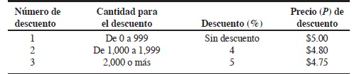
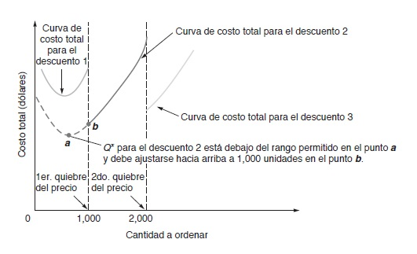
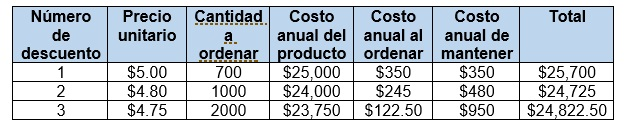

En muchas ocasiones para aumentar ventas se ofrecen descuentos a los clientes por cantidad. Un descuento por cantidad es un precio (P) reducido de un artículo de compra en grandes cantidades. Los programas de descuento con varios descuentos no son raros en grandes organizaciones.

Elaboración propia
En la figura anterior observamos un ejemplo de una tabla de descuentos de diferentes volúmenes de producto. Como se observa el precio normal del artículo es de $5. Cuando se ordenan más de 1000 unidades al mismo tiempo el precio baja a $4.80 y si se ordenan más de 2000 el precio baja hasta $4.75. El decidir cuanto descuento se le va a aplicar a los productos dependiendo del volumen recae sobre el área de administración. Pero ¿cómo se toma esta decisión de forma que se ahorre dinero?
Al igual que el modelo anterior la meta global es minimizar costos. Dado que el costo unitario para el tercer descuento de la figura es el más bajo, alguien podría interesarse en comprar 2,000 unidades o más, solo por aprovechar el precio más bajo. Sin embargo, aun con el precio más bajo es posible que no se disminuyan costos totales del inventario. Es cierto que entre más producto baja el costo de compra, pero el costo de mantener aumenta por que las ordenes son más grandes. Por tanto, en los descuentos por cantidad el intercambio más importante es entre un costo de producto más bajo y el costo de mantener más alto. Cuando se incluye el costo del producto la ecuación queda de la siguiente forma:
Costo total=Costo de preparación+Costo de mantener+Costo del producto
O bien:
TC=D/Q S+Q/2 H+PD
Donde:
Q=Cantidad ordenada
D= Demanda anual de las unidades
S= Costo de ordenar o preparar por orden por año
P=Precio de la unidad
H= Costo de mantener por año
Para minimizar costos debemos hacer lo siguiente:
1) Para cada descuento, calcule el valor óptimo de Q* usando la ecuación
Q*=√2DS/IP
Observemos que la ecuación cambia el denominador de H a IP. Esto es debido a que el precio del artículo es un factor de costo anual a mantener, no es posible suponer que el costo de mantener es constante cuando el precio unitario es cambia por cada descuento. Así, es común expresar el costo de mantener (I) como porcentaje del precio unitario (P), y no como constante por unidad por año, H.
2) Para cualquier descuento, si la cantidad a ordenar es muy baja como para calificar para el descuento, ajuste la cantidad hacia arriba hasta la menor cantidad que califique para el descuento. Por ejemplo, si para el descuento 2 de la figura 3, Q* fuera de 500 unidades, su valor se ajustaría a 1000 unidades. Observando los descuentos de la figura, las ordenes entre 1000 y 1999 califican para el descuento del 4%.
Entonces, si Q* es menor que, 1000 unidades, la cantidad de la orden se ajustara a 1000 unidades.

Elaboración propia
Este paso no puede ser tan obvio. Si la cantidad, Q*, está por debajo del intervalo que califica el descuento, una cantidad una cantidad ubicada dentro de este rango puede ser aún más baja.
Observando la figura 4, la curva del costo totales se compone de 3 curvas diferentes. Cada una de las curvas está relacionada con los 3 diferentes descuentos de la figura 3. Como podemos observar el descuento 2 el valor de Q* está por debajo del intervalo que va de 1000 a 1999 unidades demostrando que la menor cantidad permitida en este intervalo son las 1000 unidades, que es la cantidad que minimiza el costo total.
3) Usando la anterior ecuación del costo total, calcule el costo para cada Q*determinada entre los pasos 1 y 2. Si fuese necesario ajustar Q* hacia arriba por ser menor que el intervalo de la cantidad aceptable, asegúrese de emplear el valor ajustado de Q*.
4) Seleccione la Q* que tenga el costo total más bajo, como se calculó en el paso 3. Éste será la cantidad que minimizará el costo total del inventario.
Ejemplos
Ejemplo 1
Wohl’s Discount Store tiene en inventario carritos de carreras. Recientemente le ofrecieron un programa de descuentos por cantidad para estos carritos. Este programa por cantidades se representa en la tabla de la figura 3. Así, el costo normal de los carritos es de $5.00. Para ordenes de entre 1000 y 1999 unidades, el costo unitario baja a $4.80; para 2000 unidades o más, el costo unitario es de $4.75. Además, el costo de ordenar es de $49 por orden, la demanda anual es de 5000 carritos y el cargo por mantener en inventario como porcentaje del costo es del 20%, o 0.2 ¿Qué cantidad minimizará el costo del inventario?
Solución. El primer paso es calcular Q* para cada descuento de la tabla de la figura 3. Esto se hace de la siguiente manera:
Q1*=√(2(5000)(49)/(.2)(5.00) )=700 carritos por orden
Q1*=√(2(5000)(49)/(.2)(4.80) )=714 carritos por orden
Q1*=√(2(5000)(49)/(.2)(4.75) )=718 carritos por orden
El segundo paso es ajustar hacia arriba los valores de Q* que son menores que el intervalo permitido para el descuento. Como Q*1 está entre los 0 y 999, no necesita ajustarse. Como Q*2 está por debajo de intervalo permisible de 1000 a 1999, debe ajustarse a 1000 unidades. Lo mismo para Q*3 que debe ajustarse a 2000 unidades. Después de este paso, se deben probar las siguientes cantidades a ordenar en la ecuación del costo total:
Q*1=700
Q*2=1000-ajustada
Q*3=2000-ajustada
El tercer paso es usar la ecuación del costo total y calcular el costo total para cada cantidad a ordenar. Este paso se hace con ayuda de la tabla 1, la cual presenta los cálculos para cada nivel de la figura anterior.
Tabla 1

Elaboración propia
Finalmente, el cuarto paso es seleccionar la cantidad a ordenar con menor costo total. Observando la tabla 1 se ve que al ordenar 1000 carritos de manera simultánea minimiza el costo total. Sin embargo, también verá que el costo de ordenar 2000 carritos es sólo un poco mayor que el costo de ordenar 1000 carritos. Entonces si el costo de del tercer descuento baja, por ejemplo, a $4.65, esta cantidad podría ser la que minimizará el costo del inventario.